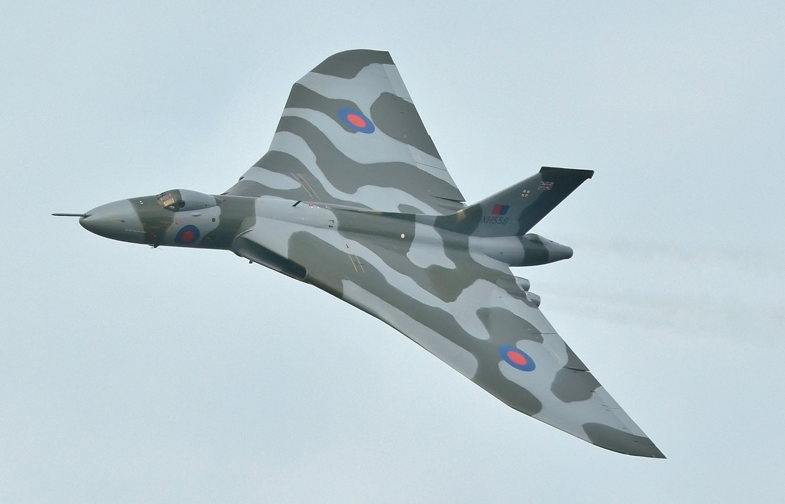
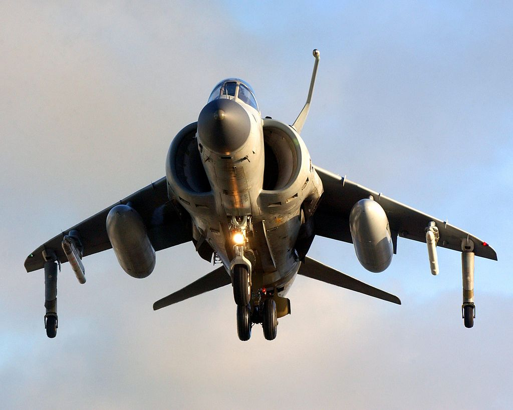
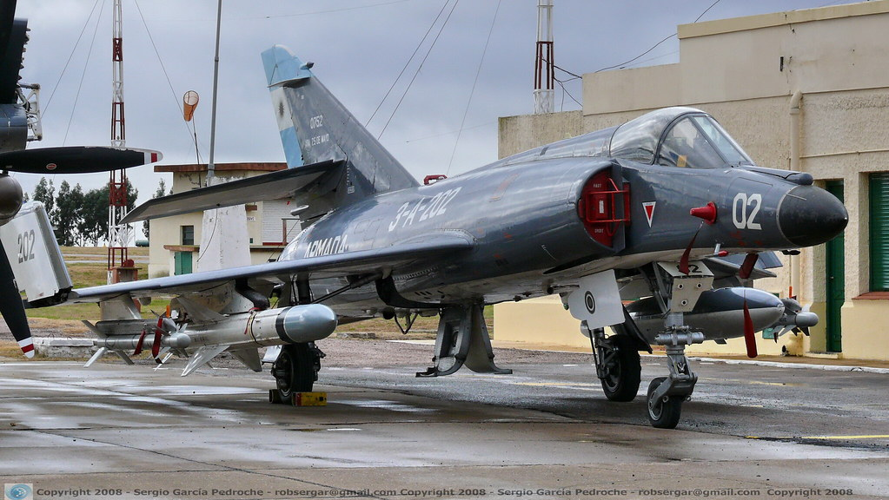
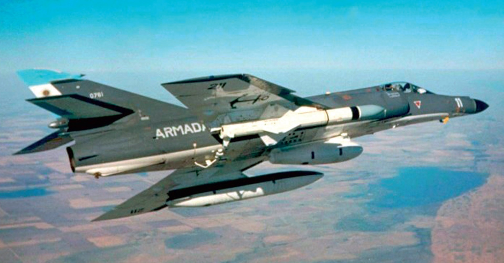
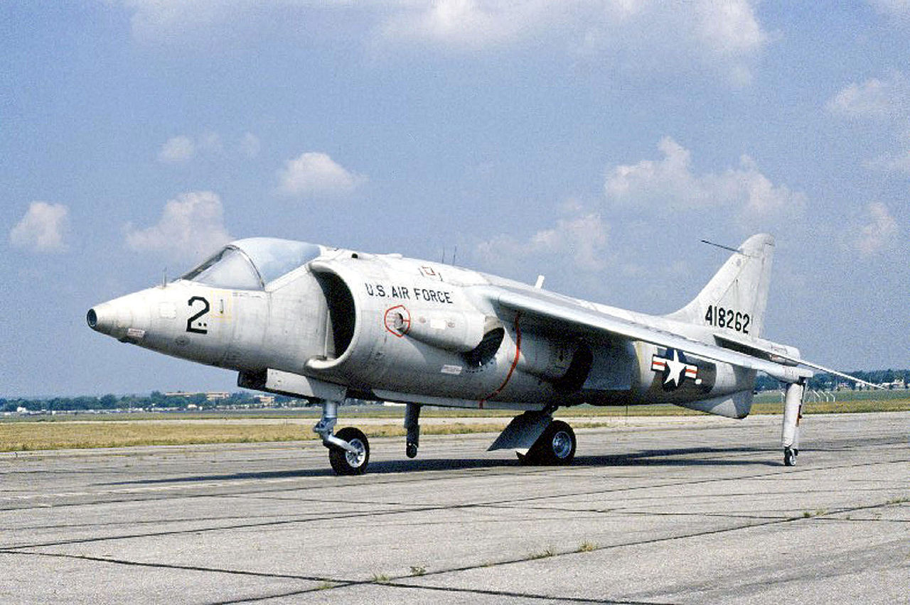
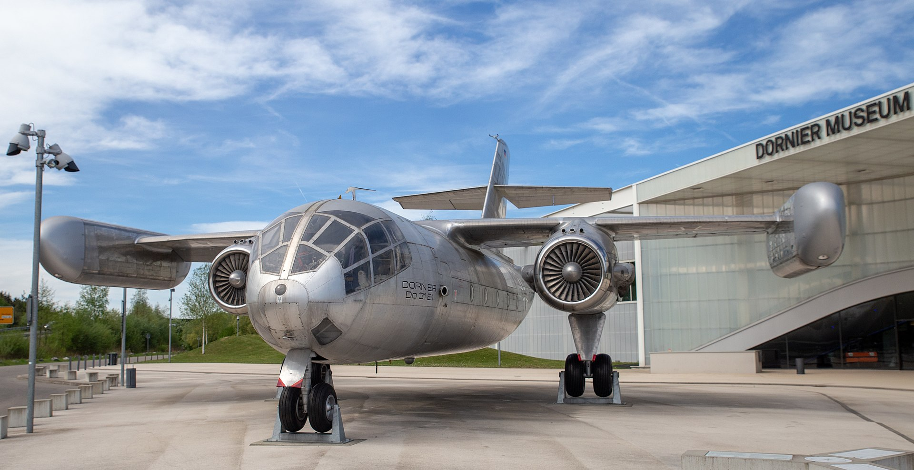
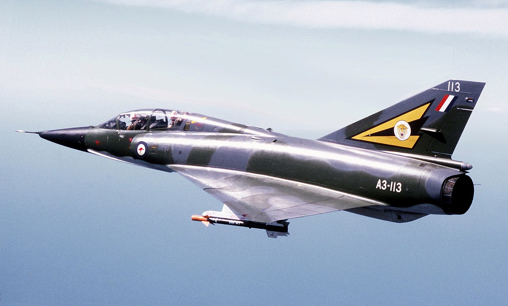
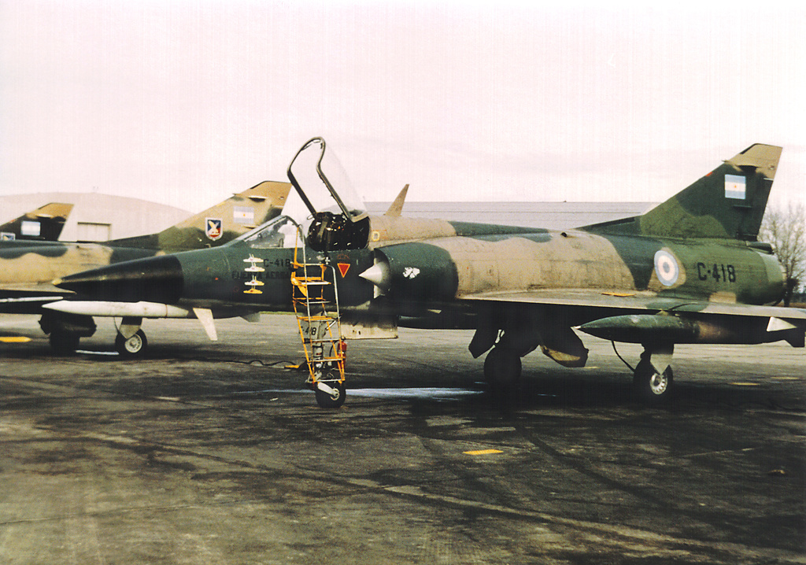
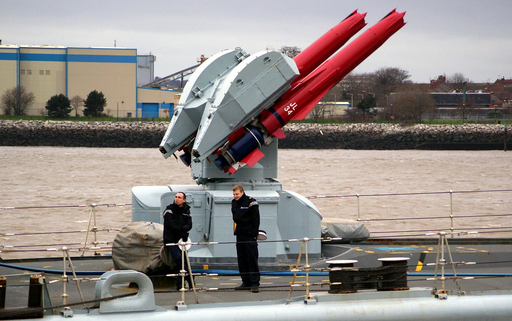

포클랜드 전쟁 잡담 (11/4)
게시: 2021-11-04T06:30:35+09:00
<로열 네이비와 함께 여왕폐하의 적과 싸우자> 1982년 포클랜드 사태가 터졌을 때 영국 해/공군은 그야말로 망하기 일보 직전 상태. 두 척의 항공모함 HMS Hermes와 HMS Invincilble은 모두 해외에 중고품으로 매각되기 직전. 구축함 등의 수상함들도 (영국제답게) 날림으로 만든 것들이 많아서 거친 남대서양의 겨울 바다를 견딜 수 있을지 의문. 실제로 몇몇 함선에서는 7월 중순 바다가 거칠어지기 이전에 이미 crack이 발생하여 물이 샜다고. 장거리 폭격기인 Vulcan(사진1,2)도 모두 퇴역 준비를 하고 있던 상태. 결정적으로 소련에 대한 폭격 임무는 이미 포기한 상태이다보니 당시 영국 공군 벌컨 조종사들 중 공중급유를 해본 가장 최근 시점이 10년 전. 이들은 부랴부랴 공중급유 연습을 해본 뒤 곧장 대서양 횡단 실전에 투입됨. 가장 문제였던 부분은 Sea Harrier (사진3)조종사 수급. 항모들이 퇴역하는 마당에 Sea Harrier 함재기 조종사들도 많이 양성해놓지 않은 상태. 시 해리어 전대 중 하나는 총 8대의 시 해리어를 가져가기로 했으나 당장 투입 가능한 해리어 조종사가 6명 뿐. 그래서 자존심 죽이고 영국 공군에게 '해리어 조종사 급구' 협조 공문을 보냄. 2명을 간신히 찾아서 '기쁜 소식이다, 니들이 로열 네이비와 함께 여왕폐하의 적과 싸우러 출항하는 영광을 누리게 되었다'는 급보를 보냈는데, 그 2명의 조종사는 금요일 밤 독일 기지 근처의 술집에서 그 급보를 받았다고.
 
<매뉴얼 있잖아> 한편, 포클랜드를 침공한 아르헨티나 육해공군도 의외로 전쟁 준비가 전혀 안 되어 있던 상태. 당시 영국군의 준비 상태가 얼마나 엉망인지 알고 있었고 애초에 포클랜드 침공 자체가 내부의 문제를 외부 문제로 풀기 위해 정략적으로 감행한 것이다보니, 그냥 '영국 거지들이 여기까지 올 차비도 없을 것'이라는 믿음 밖에 없었음. 가장 단적인 예가 아르헨티나 해군이 가지고 있던 최고의 무기, Dassault Super Etendard와 Exocet 미사일. 당시 아르헨 해군의 주력 함재기는 경공격기인 Skyhawk로서 이것들은 멍텅구리 폭탄 외에는 대함 공격 무기가 별로 없었음. 당시 아르헨은 이것들을 쉬페르 에땅다르로 교체하고 있던 시점이었는데, 아르헨 항모인 ARA Veinticinco de Mayo로의 이착함을 위한 개조도 아직 안된 상태. 엑조세 미사일도 이제 막 프랑스에서 도입하고 있떤 시점이라, 엑조세 미사일도 딱 5발만 들여놓고 아직 추가 물량이 인도되지 않은 상태에서 포클랜드 침공을 하는 바람에 무기 금수 조치가 걸림. 덕분에 아르헨 해군은 엑조세 미사일 5발로 전쟁을 수행. 결정적으로 엑조세 미사일에게 목표물을 지정하려면 쉬페르 에땅다르의 컴퓨터와 엑조세 미쓸의 통합 작업을 해야 하는데, 그걸 하기 직전에 전쟁이 터짐. 그래서 아르헨에 출장와서 그 통합 작업을 하던 다소 사의 엔지니어들이 모조리 철수. 결국 아르헨 기술자들이 매뉴얼을 처음부터 읽어가며 추측에 의해 작업을 했다고.
 
<해리어는 태생 자체가 함재기 아니었나?> 흔히 생각하는 것과는 달리, 해리어는 원래 함재기용으로 만들어진 것이 아니라 영국 공군을 위해 만들어진 것. 개발 당시인 1960년대는 WW2 이후 엄청난 기술적 진보들이 이루어지던 시절이고 막강 소련과의 엄중한 냉전이 진행되던 시절이라 별의별 새로운 개념들이 막 정립되던 시점. 당시 NATO는 소련과의 전쟁이 시작되면 히틀러도 당해내지 못한 소련의 기갑 웨이브를 지상군으로 막아낼 방법은 사실상 없다고 반쯤 포기하던 상태. 그래서 핵과 항공 전력으로 그걸 막아낼 생각. 그런데 당시 새롭게 생겨난 개념이 미사일 만능론. 유인 항공기와는 달리 요격도 어렵고 아군 사상자 걱정할 필요도 없으며 비교적 싸게 많이 만들 수 있었으니, 만약 전쟁이 시작되면 소련이 탄도미사일을 빗발처럼 쏘아대서 NATO군의 주요 비행장을 모조리 파괴할 거라는 믿음이 강하던 시점. 그걸 극복하려고 만들어진 것이 수직 이착륙기인 해리어. (사진1은 해리어의 전신인 Hawker Siddeley XV-6A Kestrel. 미국에서 평가받느라고 미공군 마킹이 되어 있음) 당시 서방은 수직 이착륙기 연구를 여러가지 수행했으나 그 중 유일하게 성공했던 것은 해리어 하나 뿐. 대표적인 실패작이 사진2의 Dornier Do-31. 날개 끝에 붙은 두툼한 수직 제트 분사 pod를 통해 수직 추력을 얻는 구조.
 
<지피지기 백전불태> 해리어는 현대 영국 해군의 상징과 같은 이미지를 가지고는 있지만 어쩔 수 없는 수직 이착륙기의 한계를 가진 빈약한 성능의 전투기. 초음속 전투기인 프랑스제 Mirage III (사진1) 및 미라쥬 V의 이스라엘 버전인 Dagger(사진2)를 다수 보유한 아르헨 공군과 맞부딪히면 승산이 거의 없었음. 당시 영국 국방성은 포클랜드에 이들을 파견하면서도 전투가 벌어지면 며칠 안에 Sea Harrier는 모조리 격추될 거라고 판단. 그래서 그걸 보충하기 위한 해리어기들을 긁어모아 컨테이너 화물선인 Atlantic Converyor에 추가로 실어보낸 것. 그런데 뜻밖에도 해리어들은 아르헨 공군과의 교전에서 2대를 잃으면서 20대를 격추하는 완승을 거둠. 대체 어떻게? 몇가지 이유가 있음. 1) 아르헨 공군은 바다 위에서의 싸움에 대해 아무 훈련이 되어 있지 않았고, 무엇보다 공중급유 능력이 없어 포클랜드 상공에서는 항상 연료 부족에 시달렸음. 2) 해리어는 아음속의 느린 전투기지만 저고도에서의 비행 능력이 매우 우수. 미라쥬는 매우 우수한 제공 전투기이지만 저공에서의 기동성은 별로였음. 그리고 미라쥬가 고공에서 영국 함대를 공격할 방법이 전혀 없었음. 그걸 잘 알던 영국 조종사들이 해리어의 장점을 120% 활용. 절대 고공으로 올라가지 않고 저고도에서만 알짱댐. 고공 방어에 대해서는 영국 해군은 Sea Cat, Sea Dart (사진3) 등 대공 미사일에 의존. 반면에 어떻게든 영국 함대를 공격해야 했던 미라쥬는 저공까지 내려와 기관포나 멍텅구리 폭탄으로 영국 함정들을 공격해야 했음. 아마 장거리 고공에서 투하 가능한 스마트 폭탄이 있었다면 이야기가 매우 달랐을 것. 그야말로 손자병법의 지피지기 백전불태의 우수 활용 사례. 3) 전방위 공격이 가능한 AIM-9L 사이드와인더 미사일. 기존의 사이드와인더는 적기 꼬리의 제트 분사구의 열기를 포착했기 떄문에 기동전을 통해 적기 후미를 잡아야 발사가 가능했는데 아르헨에게는 없지만 영국에게는 있었던 신형 AIM-9L 사이드와인더는 적기와 정면을 마주본 상태에서도 발사 가능.
  